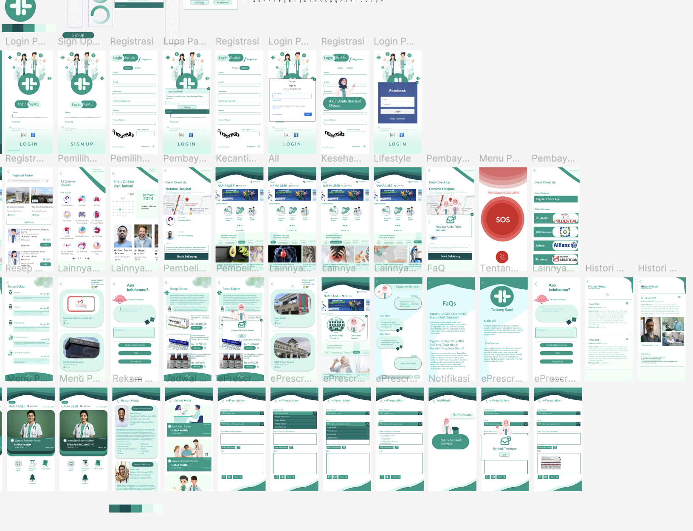

Photo caption: a Figma prototype learnt from this role.
[WRITER'S NOTE] During my time at Central Computer Improvement (CCI), i spent about a semester designing interfaces before shifting focus toward data science and research for another semester. Throughout those years i learn to: Design interfaces and experiences with usability and accessibility in mind (UI/UX), Build wireframes, prototypes, and design systems in Figma.
For the data division, my focus revolves around how the data being transformed from raw freshly scraped data to pure insight following numbers of steps, such as: Data Loading, Preprocessing, Cleaning, EDA, Visualization, Modeling, and Dashboarding.